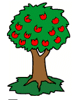

|  |
In the early 1800's, Johnny Appleseed traveled throughout the Midwestern states planting apple orchards wherever he went, for free or very little cost. Legend has it that he was a simple man, to the point that his cooking pot in which he fixed his meals doubled as a hat.On one of his trips he planted orchards for three neighboring farmers, Mr. Brown, Mr. White, and Mr. Jones. To be fair about things, he decided to plant the same number of seeds for each farmer.
He began by doing Mr. Brown's orchard the first week. The orchard resulted in a rectangular form, with the same number of seeds in each row.
When he turned his attention to Mr. White's farm, the space available required a different rectangle. Here he increased the number of rows by 1 and decreased the number of seeds per row by 9.
Finally, Mr. Jones' farm called for another change of dimensions in order to achieve a nice rectangle. He increased the number of rows by 5 and likewise decreased the number of seeds in a row by 15, over what he had just done for Mr. White.
What was the total number of seeds that Johnny planted on this trip?
| Comments? Send e-mail. | Back to top | Go back to Home Page | Go back to Contents |